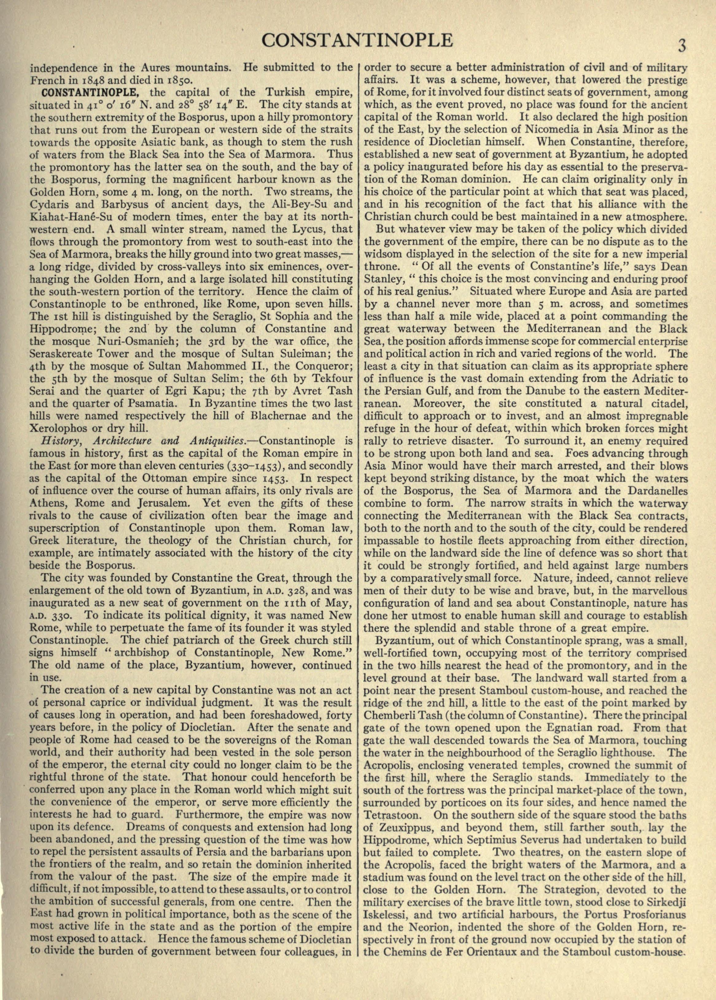
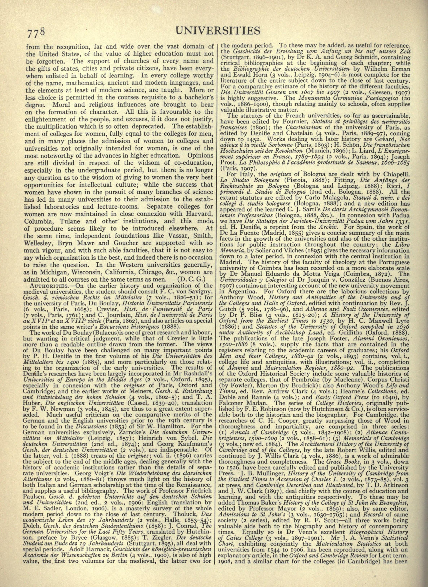
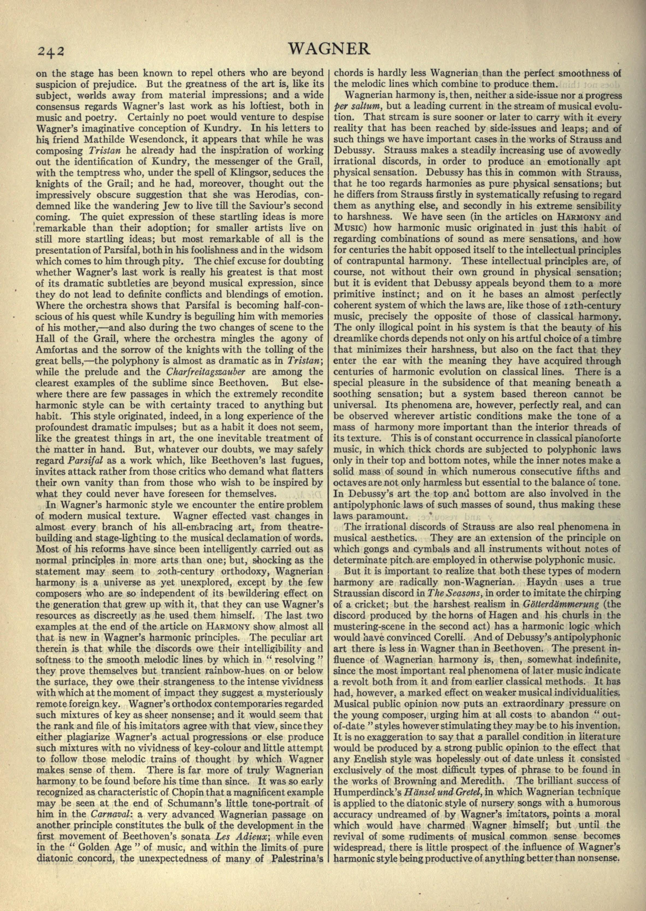

Widsom in the Britannica scans
Inspect three printed spelling occurrences, distinguish scan indices from page numbers, and assess what the parallel does—and does not—show.
On this page
The spelling “widsom” occurs visibly in three scanned Britannica pages: volume 7, page 3; volume 27, page 778; and volume 28, page 242. These are printed occurrences, not just search results in OCR text. They are relevant to the same letter order in the LP1-04 reading, but the shared spelling alone does not identify Britannica as its source.
Inspect the three occurrences
The archive records describe a set dated c.1910–1922 whose first 29 volumes belong to the eleventh edition, with supplementary volumes forming the twelfth. The evidence here is tied to these particular scanned copies. It does not assume that every impression has identical typesetting.
Volume 7, printed page 3: Constantinople

Volume 27, printed page 778: Universities

Volume 28, printed page 242: Wagner

On the Universities page, the misspelled occurrence concerns co-education. Two lines later, the same paragraph uses the ordinary spelling “wisdom.” The close pair makes the letter order easy to compare without relying on OCR. On the Wagner page, the passage concerns Parsifal and wisdom acquired through pity; that context is part of the source, not evidence that the passage supplies a Liber Primus key.
Printed pages and scan indices are different
| Volume | Article | Printed page | Archive scan index |
|---|---|---|---|
| 7 | Constantinople | 3 | n22 |
| 27 | Universities | 778 | n819 |
| 28 | Wagner | 242 | n263 |
The printed number appears on the scanned sheet. The n-number identifies an image in the archive’s sequence, which also includes preliminary material. Do not substitute one for the other in a citation or book-code experiment. Open the full scan to verify both the heading and printed page number.
What this adds to the LP spelling question
It establishes that this letter transposition exists in a potential historical reference source. It does not establish that the puzzle authors saw these pages, copied the error, or intended any of their topics as clues. These three selected hits are not a census of all occurrences in Britannica or other books, so they cannot provide a rarity estimate.
The numerical question is separate. WIDSOM and WISDOM contain the same runes in different order, so their additive Gematria Primus totals are identical: 270. This spelling change cannot turn the word’s sum into a prime. See the explicit spelling comparisons. An order-sensitive cipher or book-code proposal would require different evidence and a fully specified operation.
Historical use of a book in another puzzle stage would also be a separate claim. A reproduced book code needs its original clue, exact edition or transcription, counting convention, coordinates and output. A spelling parallel cannot stand in for that reconstruction; see reproducible research records.
How to check the evidence
- Open each full-page JPEG and confirm the article heading and printed page number.
- Find the short phrase shown in its detail above and read the printed letters directly. OCR is a locator, not the deciding evidence.
- Use the archive reader link to identify the scanned copy. Preserve case, spelling and page-number conventions when recording a comparison.
- For byte-for-byte checks, compare the file with the SHA-256 in the scan manifest.
The manifest records full-page file dimensions, source URLs, hashes and the displayed detail rectangles in [x, y, width, height] pixels. These are rectangular views of the preserved JPEGs; their full pages remain downloadable. The scans and manifest are also included in the reference-data bundle.
Sources
Internet Archive collection records: volume 7 · volume 27 · volume 28. The spelling and page numbers were checked visually against the preserved page images. This article documents a source lead, not a confirmed literary influence.